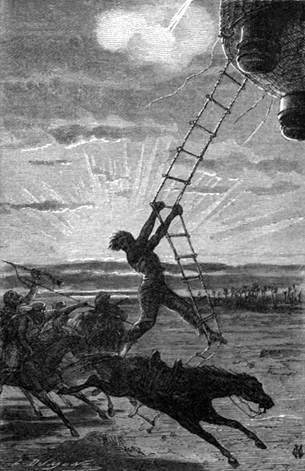

Cesta na západ. – Joovo procitnutí. – Jeho svéhlavost. – Konec Joovy historie. – Tagelel. – Obavy Kennedyovy. – Cesta na sever. – Noc u Agadesa.
Vítr během noci pozbyl prudkosti, jakou vál za dne, a Viktorie spočinula pokojně v koruně velké sykomory; doktor a Kennedy střídavě bděli, a Joe, maje kdy a kde, spal pevně a nepřetržitě celých čtyřiadvacet hodin.
„Toho léku je mu třeba,“ pravil Fergusson; „přirozenost postará se o jeho uzdravení.“
Na úsvitě strhl se vítr dosti prudký, ale vrtkavý; přeskakoval náhle na sever a na jih, posléze však nesl Viktorii k západu.
Doktor nahlížeje do mapy poznal království Damergu, krabatý, velmi úrodný kraj s vesnicemi, jichž chaty jsou zdělány z dlouhého rákosu, propleteného větvemi asklepie; obilnice nalézají se v osetých polích na malých lešeních za tou příčinou, aby byly chráněny od útoků myší a termitů.
Za nedlouho stihli do města Zindera, jež bylo poznati po náramném popravišti; uprostřed pne se strom smrti; kat číhá u jeho paty, a kdokoliv zajde do stínu stromu, jest ihned oběšen.
Pohlédnuv na bussolu Kennedy prohodil téměř mimovolně:
„Hle, už zase směřujeme na sever!“
„Co na tom? Dostaneme-li se do Timbukta, nebudeme mít proč si stýskati! Nikdy nebyla vykonána krásnější cesta za lepších okolností!…“
„Ani při lepším zdraví“ ozval se Joe, vystrčiv ze stanu mezi záclonami svou hezkou tvář všecku osvěženou.
„Aj, náš statečný přítel!“ zvolal Kennedy, „náš zachránce! Jak se daří?“
„Docela přirozeně, pane Kennedy, docela přirozeně! Nikdy nebylo mi tak dobře! Nic nejde člověku tak k duhu jako malá cesta pro zábavu, zahájená lázní v Čadu! není-li pravda, pane?“
„Dobrá duše!“ odpověděl Fergusson tiskna mu ruku. „Jaké úzkosti a obavy jsi nám způsobil!“
„Nu, a vy mně! Což myslíte, že jsem neměl starosti o váš osud? Můžete se honosit, že jste mi nahnali hodně strachu!“
„Tu se nikdy neshodneme, Joe, pohlížíš-li na věci s takového stanoviska.“
„Vidím, že ho ten pád nezměnil,“ dodal Kennedy.
„Tvá obětovnost byla vznešena, hochu, a zachránila nás, neboť Viktorie padala do jezera, a kdyby tam byla spadla, nikdo na světě nebyl by ji už vytáhl.‘“
„Ale zachránila-li vás moje obětovnost, jak říkáte mému kotrmelci, zda nezachránila i mne, když jsme tu všichni tři živi a zdrávi? Pročež nemáme si při tom při všem ničeho vyčítat.“
„S tím chlapíkem se člověk nikdy neshodne,“ pravil lovec.
„Nejlepším prostředkem ke shodě jest, nebudeme-li již o tom mluvit,“ odvětil Joe. „Co se stalo, stalo se. Ať to bylo dobré nebo špatné, netřeba se toho dotýkat.“
„Tvrdohlavče!“ zasmál se doktor. „Doufám aspoň, že nám budeš vyprávět své příhody?“
„Stojíte-li o ně, budu. Ale dříve ustrojím z této tučné husy dokonalou pečínku, neboť vidím, že pan Dick nemařil času.“
„Pravdu jsi řekl, Joe.“
„Nuže, přesvědčíme se, jak tato africká zvěřina chutná evropskému žaludku.“
Husa upečena brzy na plameni dmuchavky a ponenáhlu snědena. Joe odpravil řádný díl jako člověk, jenž několik dní nejedl. Po čaji a grogu jal se svým druhům líčiti svá dobrodružstva; mluvil s jakýmsi rozechvěním, jakkoli vzhledem k příhodám dával na jevo obvyklou filosofii. Doktorovi nedalo, aby mu nestiskl několikrát ruku, když viděl, že hodný služebník měl více na mysli spásu svého pána nežli svou vlastní; v příčině zátopy ostrova Biddionů vysvětlil mu, že úkaz ten přihází se často na jezeře Čadském.
Posléze Joe vypravuje dále, dospěl až tam, když zapadnuv do močálu, vyrazil se sebe poslední zoufalý výkřik.
„Pokládal jsem se za ztracena, pane,“ pravil, „a moje myšlenky zaletěly k vám. Jal jsem se brániti. Jak? nemohu vám říci; byl jsem zajisté odhodlán, že se nenechám pohltit bez odporu; tu spatřím dva kroky od sebe, co? konec provazu nedávno přeříznutého; vynaložil jsem poslední úsilí a tak aneb onak zachytil jsem provaz; zatáhnu, nepovoluje; soukám se a soukám a posléz ucítím pod sebou pevnou zemi! Na konci provazu najdu kotvu!… Ach! pane! mohu ji vším právem nazvat kotvou spásy, ač nevidíte-li v tom nic nepřístojného. Poznal jsem ji! kotva Viktorie! přistáli jste k zemi na tom místě! Jdu směrem provazu, jenž mi naznačuje váš směr, a po novém namáhání vyvleku se nadobro z bahniště. S odvahou vrátily se mi síly, i šel jsem dlouho nocí vzdaluje se od jezera. Konečně dorazil jsem na kraj náramného lesa. Tam pásli se v ohradě koně, nic zlého netušíce. V životě jsou chvíle, kdy každý dovede vsednout na koně, není-li pravda? Nezmařím ani minuty rozmýšlením, vyskočím na hřbet jednoho z těch čtvernožců v, a již uháníme k severu s největší rychlostí. Nebudu se vám zmiňovat o městech, jichž jsem neviděl, ani o vsích, jimž jsem se vyhnul. Ne. Jedu přes osetá pole, prodírám se houštinami, přeskakuji ohrady, ženu svého koně, pobádám ho, štvu ho! doletím na hranici vzdělané půdy. Dobrá! poušť! je mi vhod; uvidím lépe před sebe a dále. Doufal jsem posud, že uzřím Viktorii, že na mne čeká plavíc se sem a tam. Ale kde nic, tu nic. Za tři hodiny vpadl jsem jako blázen do tábora Arabů! Ach! to byla honba!… Hleďte, pane Kennedy, lovec neví, co je hon, nebyl-li sám honěn! A přece jsem mu tou radou, aby toho nezkoušel, nemusí-li! Můj kůň padl vysílením; jsem v úzkých, svalím se; vyskočím na kříž koni jednoho z Arabů! Nechtěl jsem mu ublížit, a doufám, že se na mne proto hněvat nebude, že jsem ho zardousil! Vždyť jsem spatřil vás!… a ostatek víte. Viktorie jela mi v patách, i sebrali jste mě v letu, jako sbírá jezdec prsten. Nespoléhal-li jsem právem na vás? Nuže, pane Samuele, vidíte, jak jednoduché je to vše. Nic na světě není přirozenějšího! Jsem hotov začít znova, může-li vám to ještě nějak prospět! A ostatně, jak jsem vám řekl, pane, nestojí to za řeč.“
„Hodný Joe!“ odpověděl doktor s pohnutím. „Nedůvěřovali jsme nadarmo ve tvůj důvtip a tvou obratnost!“
„E což! pane, třeba se jen vpravit v události, a člověk vybředne z nesnází! A hleďte, ještě s lepší se potáže, přijme-li věci tak, jak se sběhnou.“
Co Joe vyprávěl své příhody, zatím přeletěl balon kraj náramně rozlehlý. Kennedy postřehl v brzce na obzoru skupinu domů, jevících vzhled města. Doktor vzav radu s mapou poznal městečko Tagenel v Damergu.
„Ociťujeme se zde na cestě Barthově,“ pravil. „Tu se odloučil od svých dvou soudruhů, Richardsona a Overwega. Onen pustil se cestou do Zindera, tento cestou do Maradi, i pamatujete se, že z těchto tří cestovatelů jediný Barth uzřel opět Evropu.“
„Tíhneme zase tedy přímo na sever?“ otázal se lovec, sleduje na mapě směr Viktorie.
„Přímo, milý Dicku.“
„A to tě ani dost málo neznepokojuje?“
„Proč?“
„Poněvadž tato cesta vede nás do Tripolisa a nad velikou poušť.“
„Ó! tak daleko nepůjdeme, příteli; aspoň tak doufám.“
„Ale kde se hodláš zastavit?“
„Poslyš, Dicku, nebyl-li bys zvědav podívat se do Timbukta?“
„Do Timbukta?“
„Ovšem,“ ozval se Joe. „člověk si nedovolí vykonat cestu Afrikou, aby nezavítal do Timbukta!“
„Budeš pátým anebo šestým Evropanem, jenž spatří to tajemné město!“
„Vzhůru do Timbukta!“
„Nech tedy, ať dospějeme mezi sedmnáctý a osmnáctý stupeň šířky; tam si pak vyhledáme příznivý vítr, který nás zanese na západ.“
„Dobrá,“ odtušil lovec; „avšak máme-li před sebou ještě dlouhou cestu na sever?“
„Aspoň dvě stě čtyřicet kilometrů.“
„Spěte, pane,“ prohodil Joe; „a i vy, pane, následujte příkladu páně Kennedyova; potřebujete zajisté odpočinku, neboť k vůli mně byli jste vzhůru až přespříliš.“
Lovec natáhl se pod stan; ale Fergusson, na nějž únava nehrubě působila, setrval na svém pozorovacím stanovisku.
Než uplynuly tři hodiny, přeletěla Viktorie se svrchovanou rychlostí kamenité území s pásmy vysokých holých hor s žulovými patami; ba některé osamělé štíty vypínaly se do výše čtyř tisíc stop; žirafy, antilopy, pštrosi proháněli se s podivuhodnou hbitostí lesy trnovníkovými, mimosovými, suovými a datlovníkovými; po vyprahlé poušti domáhalo se opět vlády rostlinstvo. Byla to země Kailuů, kteří si zastírají obličej bavlněnou rouškou rovněž jako jich nebezpeční sousedé Tuaregové.

V tom, když jej uchopil, zavelel doktor…
V deset hodin večer stanula Viktorie nad důležitým městem, vykonavši znamenitou plavbu čtyř set kilometrů; v záři měsíce bylo viděti, že část města je napolo v rozvalinách; tu a tam vyvstávala mešita, vybíhajíc do hrotů, bledým paprskem světla se kmitajících; doktor změřil výšku hvězd a poznal, že jest v šířce Agadesa.
Toto město, kdysi střediště náramného obchodu, ociťovalo se již v úpadku tehda, kdy tam zavítal doktor Barth.
Viktorie, nebyvši v šeru zpozorována, přistála k zemi asi tři kilometry nad Agadesem v širém poli prosovém. Noc byla dosti pokojna a minula k páté hodině ranní, zatím co slabý větřík skláněl balon k západu, ba poněkud i k jihu.
Fergusson nelenil užiti této šťastné náhody. Vznesl se rychle a rozjel se v dlouhém pásmu slunečních paprsků.